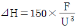
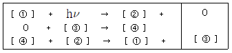
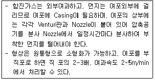
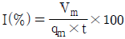
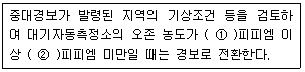
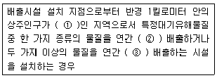

대기환경기사 (2014-03-02 기출문제)
1과목: 대기오염 개론
1. 납(Pb)의 인체 중독 및 특성에 관한 설명으로 가장 거리가 먼 것은?
- 납에 의한 중독증상은 일반적으로 Hunter - Russel 증후군으로 일컬어지고 있다.
- 만성 납중독 현상은 혈액 증상, 신경 증상, 위장관 증상 등으로 나눌 수 있다.
- 특징적인 5대 만성중독 증상으로는 연창백, 연연, 코프로폴피린뇨, 호기성 점적혈구, 신근마지 등을 들 수 있다.
- 세포내에서 납은 SH기와 반응하여 헴(Heme) 합성에 관여하는 효소를 포함한 여러 세포의 효소 작용을 방해한다.
(정답률: 72%)

2. 가우시안(Gaussian) 분산모델에 있어서 수평 및 수직방향의 표준편차 σy, σz 에 관한 가정(설명)으로 가장 거리가 먼 것은?
- 대기의 안정상태와는 관계 있지만, 연돌로부터의 풍하거리(distance downwind)와는 무관하다.
- 고도에 따라 변하는 값으로 고도는 대기중에서 하부 수백m에 국한하여 사용한다.
- 지표는 평탄하다고 간주한다.
- 시료채취시간은 약 10분으로 간주한다.
(정답률: 63%)
3. 부피가 3500m3 이고 환기가 되지 않은 작업장에서 화학반응을 일으키지 않는 오염물질이 분당 60mg씩 배출되고 있다. 작업을 시작하기 전에 측정한 이 물질의 평균 농도가 10mg/m3 이라면 1시간 이후의 작업장의 평균 농도는 얼마인가? (단, 상자모델을 적용하며, 작업시작 전, 후의 온도 및 압력조건은 동일하다.)
- 11.0 mg/m3
- 13.6 mg/m3
- 18.1 mg/m3
- 19.9 mg/m3
(정답률: 54%)
4. 2000m에서 대기압력(최초 기압)이 860mbar, 온도가 5℃, 비열비 K가 1.4 일 때 온위(Potential Temperature)는? (단, 표준압력은 1000mbar)
- 약 284K
- 약 290K
- 약 294K
- 약 309K
(정답률: 72%)
5. 다음 오염물질 중 대표적인 인체의 국소증상으로 손ㆍ발바닥에 나타나는 각화증, 각막궤양, 비중격천공, Mee's line, 탈모 등이 있는 것은?
- Be
- Hg
- V
- As
(정답률: 71%)
6. 등압선이 곡선인 경우, 원심력, 기압경도력, 전향력의 세 힘이 평형을 이루는 상태에서 등압선을 따라 부는 바람을 무엇이라 하는가?
- geostrophic wind
- corioli wind
- gradient wind
- friction wind
(정답률: 70%)
7. 스테판 볼츠만의 법칙에 의하면 표면온도가 2000K 인 흑체에서 복사되는 에너지는 표면온도가 1000K인 흑체에서 복사되는 에너지의 몇 배인가?
- 2배
- 4배
- 8배
- 16배
(정답률: 72%)
8. 굴뚝 유효 높이를 3배로 증가시키면 지상 최대오염도는 어떻게 변화되는가? (단, Sutton 식에 의함)
- 기존의 3배
- 기존의 1/3
- 기존의 9배
- 기존의 1/9
(정답률: 84%)
9. 오존(O3)의 특성과 광화학반응에 관한 설명으로 가장 거리가 먼 것은?
- 산화력이 강하여 눈을 자극하고 물에 난용성이다.
- 대기 중 지표면 오존(O3)의 농도는 NO2로 산화된 NO 량에 비례하여 증가한다.
- 과산화기가 산소와 반응하여 오존이 생성될 수도 있다.
- 오존의 탄화수소 산화반응율은 원자상태의 산소에 의한 탄화수소의 산화보다 빠르다.
(정답률: 69%)
10. 잠재적인 대기오염물질로 취급되고 있는 물질인 이산화탄소에 관한 설명으로 가장 거리가 먼 것은?
- 지구온실효과에 대한 추정 기여도는 CO2가 50% 정도로 가장 높다.
- 대기 중의 이산화탄소 농도는 북반구의 경우 계절적으로는 보통 겨울에 증가한다.
- 대기 중에 배출하는 이산화탄소의 약 5%가 해수에 흡수된다.
- 지구 북반구의 이산화탄소의 농도가 상대적으로 높다.
(정답률: 79%)
11. 다음 지표면 상태 중 일반적으로 알베도(%)가 가장 큰 것은?
- 삼림
- 사막
- 수면
- 얼음
(정답률: 84%)
12. 다음 중 수용모델의 특성에 해당하는 것은?
- 지형 및 오염원의 조업조건에 영향을 받는다.
- 단기간 분석 시 문제가 된다.
- 현재나 과거에 일어났던 일을 추정, 미래를 위한 전략을 세울 수 있으나 미래예측은 어렵다.
- 점, 선, 면 오염원의 영향을 평가할 수 있다.
(정답률: 76%)
13. Pasquill에 의한 대기안정도 분류에서 사용되는 항목으로 가장 거리가 먼 것은?
- 상대습도
- 지상 10m 고도에서의 풍속
- 태양복사량
- 운량분포
(정답률: 60%)
14. 일반적으로 가솔린 자동차 배기가스의 구성면에서 볼 때 다음 중 가장 많은 부피를 차지하는 물질은? (단, 가속상태 기준)
- 탄화수소
- 질소산화물
- 일산화탄소
- 이산화탄소
(정답률: 62%)
15. 불안정한 조건에서 가스속도가 10m/s, 굴뚝의 안지름이 5m, 가스온도가 173℃, 기온이 17℃, 풍속이 36km/hr 일 때 연기의 상승 높이는 몇 m인가? (단, 불안정 조건 시 연기의 상승높이

이며 F는 부력을 나타낸다. )- 34m
- 42m
- 49m
- 56m
(정답률: 48%)
16. 오염물질이 식물에 미치는 피해에 관한 설명으로 가장 거리가 먼 것은?
- 황화수소는 특히 고엽에 피해가 크며, 지표식물은 복숭아, 딸기, 사과 등이 며, 강한 식물은 코스모스, 토마토, 오이 등이다.
- 암모니아는 잎 전체에 영향을 주는 것이 특징이며, 암모니아에 접촉하에 수 시간이 지나면 잎 전체가 갈색이 된다.
- 불화수소는 어린잎에 피해가 현저한 편이며, 강한 식물로는 담배, 목화 등이 있다.
- 아황산가스의 지표식물로는 자주개나리, 보리 등이 있다.
(정답률: 60%)
17. 다음 주요 오존파괴물질 중 평균수명(년)이 가장 긴 것은?
- CFC - 123
- CFC - 124
- CFC - 11
- CFC - 115
(정답률: 59%)
18. 다음 대기오염물질 중 상온에서 무색투명하며, 일반적으로 불쾌한 자극성 냄새를 내는 액체이며, 햇빛에 파괴될 정도로 불안정하지만, 부식성은 비교적 약하고, 끓는점은 약 47℃ 정도, 인화점은 -30℃ 정도인 것은?
- HCl
- Cl2
- SO2
- CS2
(정답률: 76%)
19. 다음은 NO2의 광화학 반응식이다. ( )안에 알맞은 것은? (단, O는 산소원자)

- ① NO, ② NO2, ③ O3, ④ O2
- ① NO2, ② NO, ③ O2, ④ O3
- ① NO, ② NO2, ③ O2, ④ O3
- ① NO2, ② NO, ③ O3, ④ O2
(정답률: 76%)
20. 역전에 관한 다음 설명 중 옳지 않은 것은?
- 전선역전층이나 해풍역전층은 모두 이동성이지만 그 상하에서 바람과 난류가 작아서 지표부근의 오염물질들을 오랫동안 정체시킨다.
- 복사역전층에서는 안개가 발생하기 쉽고 매연이 소산되기 어려워 지표부근의 오염농도가 커진다.
- 복사역전은 하늘이 맑고 바람이 약한 자정 이후와 새벽에 걸쳐 잘 생기며, 낮이 되면 일사에 의해 지면이 가열되면 곧 소멸된다.
- 산을 넘는 푄기류가 산골짜기 사이로 통과할 때 발생하는 지형성 역전도 있으며, 이 역전층은 산골짜기, 분지 등으로 냉기가 모일 경우 발생한다.
(정답률: 59%)
2과목: 연소공학
21. 액체연료가 미립화되는데 영향을 미치는 요인으로 가장 거리가 먼 것은?
- 분사압력
- 분사속도
- 연료의 점도
- 연료의 발열량
(정답률: 64%)
22. 석탄의 물리화학적인 성상에 관한 설명으로 옳은 것은?
- 연료 조성변화에 따른 연소특성으로 회분은 착화불량과 열손실을, 탄소는 발열량 저하 및 연소불량을 초래한다.
- 석탄회분의 용융 시 SiO2, Al2O3 등의 산성 산화물량이 많으면 회분의 용융점이 상승한다.
- 석탄을 고온 건류하여 코크스를 생산할 때 온도는 250-300℃ 정도이다.
- 석탄의 휘발분은 매연발생에 영향을 주지 않는다.
(정답률: 60%)
23. Methane 1mole 이 공기비 1.33으로 연소하고 있을 때 부피기준의 공연비(Air Fuel Ratio)는?
- 9.5
- 11.4
- 12.7
- 17.1
(정답률: 47%)
24. 연소시 발생되는 NOx는 원인과 생성기전에 따라 3가지로 분류하는데, 분류항목에 속하지 않는 것은?
- Fuel NOx
- Noxious NOx
- Propmpt NOx
- Thermal NOx
(정답률: 76%)
25. 연료의 연소시 질소산화물(NOx)의 발생을 줄이는 방법으로 가장 거리가 먼 것은?
- 예열연소
- 2단연소
- 저산소연소
- 배기가스 재순환
(정답률: 60%)
26. 가로, 세로, 높이가 각각 1.0m, 2.0m, 1.0m의 연소실에서 연소실 열발생률을 20×104kcal/m3ㆍhr로 하도록 하기 위해서는 하루에 중유를 대략 몇 kg을 연소하여야 하는가? (단, 중유의 저발열량은 10000kcal/kg이며, 연소실은 하루 8시간 가동한다.)
- 320
- 420
- 550
- 650
(정답률: 51%)
27. 다음 연소 중 코우크스나 목탄 등이 고온으로 될 때 빨간 짧은 불꽃을 내면서 연소하는 것으로, 휘발성분이 없는 고체연료의 연소형태인 것은?
- 자기연소
- 분해연소
- 표면연소
- 내부연소
(정답률: 70%)
28. 화염이 길고, 그을음이 발생하기 쉬운 반면, 역화(Back fire)의 위험이 없으며, 공기와 가스를 예열할 수 있는 연소방식은?
- 예혼합연소
- 확산연소
- 플라즈마연소
- 컴팩트 연소
(정답률: 60%)
29. 2%(무게기준)의 황성분을 포함한 석탄 1톤을 표준대기 상태에서 이론적으로 완전연소 시키면 SO2가 몇 Sm3 발생되는가? (단, 황성분은 모두 SO2로 전환됨)
- 42
- 34
- 28
- 14
(정답률: 53%)
30. 주어진 기체연료 1Sm3를 이론적으로 완전연소시키는데 가장 적은 이론산 소량(Sm3)을 필요로 하는 것은? (단, 연소시 모든 조건은 동일하다)
- Methane
- Hydrogen
- Ethane
- Acetylene
(정답률: 69%)
31. 공기압은 2-10kg/cm2, 분무화용 공기량은 이론공기량의 7-12%, 분무각도는 300정도이며, 유량조절범위는 1:10정도인 액체연료의 연소장치는?
- 유압식 버너
- 고압공기식 버너
- 충돌 분무식 버너
- 회전식 버너
(정답률: 73%)
32. C:85%, H:10%, O:2%, S:2%, N:1%로 구성된 중유 1kg을 완전연소시킨 후 오르자트 분석결과 연소가스 중의 O2농도는 5.0%였다. 건조연소 가스량(Sm3/kg)은?
- 8.9
- 10.9
- 12.9
- 15.9
(정답률: 39%)
33. 연료연소 시 매연발생에 관한 설명으로 옳지 않은 것은?
- 연료의 C/H 비율이 클수록 매연이 발생하기 쉽다.
- 중합 및 고리화합물 등과 같이 반응이 일어나기 쉬운 탄화수소일수록 매연 발생이 적다.
- 분해하기 쉽거나 산화하기 쉬운 탄화수소는 매연발생이 적다.
- 탄소결합을 절단하기보다는 탈수소가 쉬운 쪽이 매연이 발생하기 쉽다.
(정답률: 49%)
34. 확산형 가스버너 중 포트형에 관한 설명으로 옳지 않은 것은?
- 포트형은 버너가 로벽에 의해 분리되어 내화벽돌로 조립된 것으로 가스 분출속도가 높다.
- 구조상 가스와 공기압을 높이지 못한 경우에 사용한다.
- 가스와 공기를 함께 가열할 수 있다.
- 가스 및 공기의 온도와 밀도를 고려하여 밀도가 큰 공기출구는 상부에, 밀도가 작은 가스출구는 하부에 배치 되도록 설계한다.
(정답률: 45%)
35. 유압분무식 버너에 관한 설명으로 옳지 않은 것은?
- 유량조절범위가 환류식의 경우는 1:3, 비환류식의 경우는 1:2 정도여서 부하변동에 적응하기 어렵다.
- 연료의 분사유량은 15-2000kL/h 정도이다.
- 분무각도가 40-900정도로 크다.
- 연료의 점도가 크거나 유압이 5kg/cm2 이하가 되면 분무화가 불량하다.
(정답률: 62%)
36. 화염을 유지하기 위한 보염기에 관한 설명으로 가장 거리가 먼 것은?
- 원추형 보염기는 원추의 가장자리에서 말려들게 한 소용돌이에 의하여 주로 보염작용을 행한다.
- 출류형 보염기는 축의 전방에 생기는 소용돌이에 의하여 주로 보염작용을 행한다.
- 공기유동에 대해 소용돌이를 발생시켜 화염의 순환영역을 만들어 화염의 안정화를 꾀한다.
- 공기유동에 대해 연료를 역방향으로 분사하고 국부공기 유속을 화염전파속도보다 작게 한다.
(정답률: 37%)
37. 열생성 NOx를 억제하는 연소방법에 관한 설명으로 가장 거리가 먼 것은?
- 희박예혼합연소: 당량비를 높여 NOx 발생온도를 현저히 낮추어(2000`K이하) prompt NOx 로의 전환을 유도한다.
- 화염형상의 변경: 화염을 분할하거나 막상으로 얇게 늘려서 열손실을 증대시킨다.
- 완만혼합: 연료와 공기의 혼합을 완만하게 하여 연소를 길게 함으로써 화염 온도의 상승을 억제한다.
- 배기재순환: 팬을 써서 굴뚝가스를 로의 상부에 피드백시켜 최고 화염온도와 산소농도로 억제한다.
(정답률: 47%)
38. 다음 중 옥탄가가 가장 낮은 물질은?
- 노말 파라핀류
- 이소 올레핀류
- 이소 파라핀류
- 방향족 탄화수소
(정답률: 52%)
39. 메탄가스 1m3가 완전연소할 때 발생하는 이론건조연소 가스량 몇 m3인가? (단, 표준상태 기준)
- 4.8
- 6.5
- 8.5
- 10.8
(정답률: 54%)
40. 기체연료의 이론공기량(Sm3/Sm3)을 구하는 식으로 옳은 것은? (단, H2, CO, CxHy, O2는 연료 중의 수소, 일산화탄소, 탄화수소, 산소의 체적비를 의미한다.)
- 0.21 {0.5H2 + 0.5CO + (χ+y/4)CxHy - O2}
- 0.21 {0.5H2 + 0.5CO + (χ+y/4)CxHy + O2}
- 1/0.21 {0.5H2 + 0.5CO + (χ+y/4)CxHy - O2}
- 1/0.21 {0.5H2 + 0.5CO + (χ+y/4)CxHy + O2}
(정답률: 68%)
3과목: 대기오염 방지기술
41. 여과집진장치에 관한 설명으로 옳지 않은 것은?
- 수분이나 여과속도에 대한 적응성이 높다.
- 폭발성 및 점착성 먼지의 처리에 적합하지 않다.
- 여과재의 교환으로 유지비가 많이 든다.
- 가스의 온도에 따라 여과재 선택에 제한을 받는다.
(정답률: 68%)
42. 질소산화물(NOx) 저감기술로 가장 거리가 먼 것은?
- 유기질소화합물을 함유하지 않는 연료를 사용할 것
- 연소영역에서의 산소의 농도를 높일 것
- 고온영역에서 연소가스의 체류시간을 짧게할 것
- 부분적인 고온영역을 없게 할 것
(정답률: 59%)
43. 다음은 어떤 여과집진장치에 관한 설명인가?

- Pulse jet 형
- 진동형
- 역기류 형
- Reblower 형
(정답률: 56%)
44. 동일한 밀도를 가진 먼지입자(A, B)가 2개가 있다. B먼지입자의 지름이 A먼지입자의 지름보다 100배가 더 크다고 하면, B먼지입자 질량은 A먼지입자의 질량보다 몇 배나 더 크겠는가?
- 100
- 10,000
- 1,000,000
- 100,000,000
(정답률: 51%)
45. 사이클론의 유입구 높이가 18.75cm, 원통부의 높이가 1.0m, 원추부의 높이가 1.0m 일 때 외부선회류의 회전수는?
- 2
- 4
- 6
- 8
(정답률: 56%)
46. 전기집진장치에서 입구 먼지농도가 16g/Sm3, 출구 먼지농도가 0.1g/Sm3이었다. 출구 먼지농도를 0.03g/Sm3으로 하기 위해서는 집진극의 면적을 약 몇 % 넓게 하면 되는가? (단, 다른 조건은 무시한다.)
- 32%
- 24%
- 16%
- 8%
(정답률: 45%)
47. 가스 1m3 당 50g의 아황산가스를 포함하는 어떤 폐가스를 흡수 처리하기 위하여 가스 1m3에 대하여 순수한 물 2000kg의 비율로 연속 향류 접촉시켰더니 폐가스 내 아황산가스의 농도가 1/10 로 감소하였다. 물 1000kg에 흡수된 아황산가스의 양(g)은?
- 11.5
- 22.5
- 33.5
- 44.5
(정답률: 56%)
48. 건식 탈황ㆍ탈질방법 중 하나인 전자선조사법의 프로세스 특징으로 가장 거리가 먼 것은?
- 연소 배기가스에 암모니아 등을 첨가해 α, β, γ선, 전리성 방사선 등을 조사한다.
- 부생물로 황산암모늄 및 질산암모늄을 생성한다.
- 구성이 복잡해 계내의 압력손실이 높고, 배기가스의 변동 등에 대처가 어렵다.
- 탈질 및 탈황효율은 전자선의 조사량에 비례한다.
(정답률: 48%)
49. 처리용량이 크며, 먼지의 크기가 0.1-0.9㎛인 것에 대해서도 높은 집진 효율을 가지며, 습식 또는 건식으로도 제진할 수 있고, 압력손실이 매우 적고, 유지비도 적게 소요될 뿐 아니라 고온의 가스도 처리 가능한 집진장치는?
- 전기집진장치
- 원심력집진장치
- 세정집진장치
- 여과집진장치
(정답률: 65%)
50. 유수식 세정집진장치의 종류와 가장 거리가 먼 것은?
- 가스분수형
- 스크루형
- 임펠라형
- 로타형
(정답률: 59%)
51. 습식 전기집진장치의 특징에 관한 설명으로 가장 거리가 먼 것은?
- 낮은 전기저항 때문에 생기는 재비산을 방지할 수 있다.
- 처리가스 속도를 건식보다 2배 정도 높일 수 있다.
- 집진극면이 청결하게 유지되며 강전계를 얻을 수 있다.
- 먼지의 저항이 높기 때문에 역전리가 잘 발생된다.
(정답률: 63%)
52. 압력손실이 250mmH2O 이고, 처리가스량 30000m3/h인 집진장치의 송풍기 소요동력(kW)은? (단, 송풍기의 효율은 80%, 여유율은 1.25 이다.)
- 약 25 kW
- 약 29 kW
- 약 32 kW
- 약 38 kW
(정답률: 59%)
53. 전기집진장치의 장애현상 중 먼지의 비저항이 비정상적으로 높아 2차 전류가 현저하게 떨어질 때의 대책으로 다음 중 가장 적절한 것은?
- Baffle을 설치한다.
- 방전극을 교체한다.
- 스파크 횟수를 늘린다.
- 바나듐을 투입한다.
(정답률: 70%)
54. 세정집진장치의 원리에 대한 설명으로 옳지 않은 것은?
- 배기가스를 증습하면 입자의 응집이 낮아진다.
- 액적에 입자가 충돌하여 부착된다.
- 미립자가 확산되면 액적과의 접촉이 증가된다.
- 액막과 기포에 입자가 접촉하여 부착된다.
(정답률: 53%)
55. 먼지입도의 분포(누적분포)를 나타내는 식은?
- Rayleigh 분포식
- Freundlich 분포식
- Rosin - Rammler 분포식
- Cunningham 분포식
(정답률: 58%)
56. 흡수장치를 액분산형과 기체분산형으로 분류할 때 다음 중 기체분산형에 해당하는 것은?
- Spray Tower
- Packed Tower
- Plate Tower
- Spray Chamber
(정답률: 63%)
57. 높이 7m, 폭 10m, 길이 15m의 중력집진장치를 이용하여 처리가스를 4m3/sec의 유량으로 비중이 1.5인 민저를 처리하고 있다. 이 집진장치가 포집할 수 있는 최소입자의 크기(dmin)는? (단, 온도는 25℃, 점성계수는 1.85×10-5kg/mㆍs이며 공기의 밀도는 무시한다.)
- 약 32㎛
- 약 25㎛
- 약 17㎛
- 약 12㎛
(정답률: 38%)
58. 유해가스를 촉매연소법으로 처리할 때 촉매에 바람직하지 않은 물질과 가장 거리가 먼 것은?
- 납(Pb)
- 수은(Hg)
- 황(S)
- 일산화탄소(CO)
(정답률: 53%)
59. 가로 5m, 세로 8m인 두 집진판이 평행하게 설치되어 있고, 두 판 사이 중간에 원형철심 방전극이 위치하고 있는 전기집진장치에 굴뚝가스가120m3/min로 통과하고, 입자이동속도가 0.12m/s일 때의 집진효율은? (단, Deutsch - Anderson식 적용)
- 98.2%
- 98.7%
- 99.2%
- 99.7%
(정답률: 49%)
60. 다음 발생 먼지 종류 중 일반적으로 S/Sb가 가장 큰 것은? (단, S는 진 비중, Sb는 겉보기 비중)
- 미분탄보일러
- 시멘트킬른
- 카본블랙
- 골재드라이어
(정답률: 71%)
4과목: 대기오염 공정시험기준(방법)
61. 굴뚝 배출가스 중의 카드뮴 화합물을 분석하기 위하여 시료를 채취하려고 한다. 시료 채취 시 굴뚝 배출가스 온도에 따른 사용 여과지와의 연결로 거리가 먼 것은?
- 120℃ 이하 - 셀룰로스 섬유제 여과지
- 250℃ 이하 - 헤미셀룰로스 섬유제 여과지
- 500℃ 이하 - 유리 섬유제 여과지
- 1000℃ 이하 - 석영 섬유제 여과지
(정답률: 52%)
62. 보통형(I형) 흡인노즐을 사용한 굴뚝 배출가스 흡인시 10분간 채취한 흡인가스량(습식가스미터에서 읽은 값)이 60L 이었다. 이 때 등속흡인이 행하여지기 위한 가스미터에 있어서의 등속흡인유량의 범위는? (단, 등속흡인 정도를 알기 위한 등속계수

이다.)- 3.3-5.3 L/분
- 5.5-6.3 L/분
- 6.5-7.3 L/분
- 7.5-8.3 L/분
(정답률: 57%)
63. 배출가스 중 먼지를 여과지에 포집하고 이를 적당한 방법으로 처리하여 분석용 시험용액으로 한 후 원자흡수분광광도법을 이용하여 각종 금속원소의 원자흡광광도를 측정하여 정량분석하고자 할 때, 다음 중 금속원소별 측정파장으로 옳게 짝지어진 것은?
- Pb - 357.9 nm
- Cu - 228.8 nm
- Ni - 217.0 nm
- Zn - 213.8 nm
(정답률: 61%)
64. 배출가스 중 크롬화합물을 자외선/가시선 분광법(흡광광도법)으로 분석할 때 사용되는 시약으로만 옳게 나열된 것은?
- 과망간산칼륨, 다이페닐카바지드
- 구연산 암모늄 - EDTA, 디에틸디티오 카바민산나트륨
- 디메틸글리옥심, 클로로메틸
- 디티존, 시안화칼륨
(정답률: 34%)
65. 굴뚝 배출가스를 습식가스미터를 사용하여 흡습관법으로 습윤가스의 수증기 백분율을 측정한 결과, 체적백분율로 14.45% 이었다. 이 때 흡수된 수분의 질량은? (단, 습윤가스의 온도는 70℃, 시료채취량은 10L, 대기압, 가스미터게이지압, 가스미터 온도 70℃에서의 수증기포화압은 각각 0.6기압, 25mmHg, 270mmHg 이다.)
- 약 0.15g
- 약 0.2g
- 약 0.25g
- 약 0.3g
(정답률: 30%)
66. 원형굴뚝의 반경이 0.85m 일 때 측정점수는 몇 개인가?
- 4
- 8
- 12
- 20
(정답률: 56%)
67. 굴뚝배출가스 중 오염물질 연속자동측정기기의 설치 위치 및 방법으로 옳지 않은 것은?
- 병합굴뚝에서 배출허용기준이 다른 경우에는 측정기기 및 유량계를 합쳐지기 전 각각의 지점에 설치하여야 한다.
- 분산굴뚝에서 측정기기는 나뉘기 전 굴뚝에 설치하거나, 나뉜 각각의 굴뚝에 설치하여야 한다.
- 병합굴뚝에서 배출허용기준이 같은 경우에는 측정기기 및 유량계를 오염물질이 합쳐진 후 지점 또는 합쳐지기 전 지점에 설치하여야 한다.
- 불가피하게 외부공기가 유입되는 경우에 측정기기는 외부 공기 유입 후에 설치하여야 한다.
(정답률: 64%)
68. 대기오염공정시험기준상 따로 규정이 없는 한 시험에 사용하는 ① 시약 명칭, ② 화학식, ③ 농도(%), ④ 비중(약) 기준으로 옳은 것은?
- ① 암모니아수, ② NH4OH, ③ 30.0-34.0(NH3로서), ④ 1.⑤
- ① 요오드화수소산, ② HI, ③ 46.0-48.0, ④ 1.25
- ① 브롬화수소산, ② HBr, ③ 47.0-49.0, ④ 1.48
- ① 과염소산, ② H2ClO3, ③ 60.0-62.0, ④ 1.34
(정답률: 51%)
69. 굴뚝 배출가스 중 먼지를 반자동식 채취기에 의한 방법으로 측정할 경우 원통형 여과지의 전처리 조건으로 가장 적합한 것은? (단, 배출가스 온도가 110±5℃ 이상으로 배출된다.)
- 80±5℃에서 충분히(1-3시간) 건조
- 100±5℃에서 충분히(1시간) 건조
- 120±5℃에서 충분히(1시간) 건조
- 배출가스와 동일한 온도조건에서 충분히(1-3시간) 건조
(정답률: 54%)
70. 이온크로마토그래프법(Ion Chromatography)에 사용되는 장치에 관한 설명으로 옳지 않은 것은?
- 용리액조는 이온성분이 용출되지 않는 재질로써 용리액이 공기와 원활한 접촉이 가능한 개방형을 선택한다.
- 송액펌프는 맥동이 적은 것을 선택한다.
- 시료주입장치는 일정량의 시료를 밸브조작에 의해 분리관으로 주입하는 루프주입방식이 일반적이다.
- 검출기는 분리관 용리액 중의 시료성분의 유무와 량을 검출하는 부분으로 일반적으로 전도도 검출기를 많이 사용한다.
(정답률: 63%)
71. 황성분 1.6% 이하 함유된 액체연료를 사용하는 연소시설에서 배출되는 황산화물(표준산소농도를 적용받는 항목)의 실측농도측정 결과 741ppm이었다. 배출가스 중의 실측산소농도는 7%, 표준산소농도는 4%이다. 황산화물의 농도(ppm)는 약 얼마인가?
- 750 ppm
- 800 ppm
- 850 ppm
- 900 ppm
(정답률: 50%)
72. 원자흡광분석에서 발생하는 간섭 중 분석 시 사용하는 스펙트럼의 불꽃중에서 생성되는 목적원소의 원자증기 이외의 물질에 의하여 흡수되는 경우에 발생되는 것은?
- 이온학적 간섭
- 분광학적 간섭
- 물리적 간섭
- 화학적 간섭
(정답률: 61%)
73. 환경대기 중 가스상 물질을 용매포집법으로 포집할 때 사용하는 순간유량계 중 면적식 유량계는?
- 게이트식 유량계
- 미스트식 가스미터
- 오리피스 유량계
- 노즐식 유랑계
(정답률: 61%)
74. 가스크로마토그래프 분석에 사용하는 검출기 중 이황화탄소를 분석(0.5V/V ppm 이상)하는데 가장 적합한 검출기는?
- ICD
- FPD
- ECD
- TCD
(정답률: 35%)
75. 문제 복원 오류로 복원하지 못하였습니다. 정확한 내용을 아시는분 께서는 오류신고를 통하여 내용 작성 부탁 드립니다. 정답은 2번 입니다.
- 문제 복원 오류로 복원하지 못하였습니다. 정확한 내용을 아시는분 께서는 오류신고를 통하여 내용 작성 부탁 드립니다
- 문제 복원 오류로 복원하지 못하였습니다. 정확한 내용을 아시는분 께서는 오류신고를 통하여 내용 작성 부탁 드립니다
- 문제 복원 오류로 복원하지 못하였습니다. 정확한 내용을 아시는분 께서는 오류신고를 통하여 내용 작성 부탁 드립니다
- 문제 복원 오류로 복원하지 못하였습니다. 정확한 내용을 아시는분 께서는 오류신고를 통하여 내용 작성 부탁 드립니다
(정답률: 21%)
76. 굴뚝 배출가스 중 총탄화수소 측정분석에 사용하는 용어정의로 옳지 않은 것은?
- 스팬값 : 측정기의 측정범위는 배출허용기준 이상으로 하며, 보통 기준의 1.2~3배를 적용한다.
- 교정가스 : 농도를 알고 있는 희석가스를 사용한다.
- 영점편차 : 영점가스 주입 전ㆍ후에 측정기가 반응하는 정도의 차이로 운전기간 동안에 점검, 수리 또는 교정이 없는 상태이어야 한다.
- 교정편차 : 최고농도의 교정가스 주입 전ㆍ후에 측정기가 반응하는 정도의 차이로 운전기간 동안에 점검, 수리 또는 교정이 가능한 상태이어야 한다.
(정답률: 36%)
77. 환경대기 중에 있는 아황산가스 농도를 자동연속측정법으로 분석하고자 한다. 이에 해당하지 않는 것은?
- 적외선형광법
- 용액 전도율법
- 흡광차분광법
- 불꽃광도법
(정답률: 56%)
78. 굴뚝 배출가스 내의 염화수소 분석방법 중 자외선/가시선 분광법(흡광광도법)에 해당하는 것은?
- 티오시안산 제이수은법
- 질산은법
- 란탄-알리자린 콤플렉숀법
- 4-아미노안티피린법
(정답률: 39%)
79. 굴뚝에서 배출되는 가스상 물질을 채취할 때 ① 분석대상가스별 ② 사용 채취관 및 도관의 재질 ③ 여과재 재질의 연결로 가장 적합한 것은?
- ① 암모니아 - ② 염화비닐수지 - ③ 소결유리
- ① 황산화물 - ② 보통강철 - ③ 알칼리 성분이 없는 유리솜
- ① 불소화합물 - ② 스테인레스강 - ③ 카아보란덤
- ① 벤젠 - ② 세라믹 - ③ 카아보란덤
(정답률: 53%)
80. 환경대기 중 질소산화물 농도를 측정하기 위한 시험방법 중 주시험방법은?
- 살츠만법(자동)
- 파라로잘린법(수동)
- 화학발광법(자동)
- 야콥스호흐하이저법(수동)
(정답률: 42%)
5과목: 대기환경관계법규
81. 대기환경보전법령상 시ㆍ도지사는 배출부과금 납부의무자가 천재지변 등으로 사업자의 재산에 중대한 손실이 발생한 경우로서 배출부과금을 납부기한 전에 납부할 수 없다고 인정하면 징수유예를 받거나 분할납부 하게 할 수 있다. 다음 중 기본부과금의 징수유예기간 중의 분할납부횟수기준으로 옳은 것은?
- 24회 이내
- 12회 이내
- 6회 이내
- 4회 이내
(정답률: 39%)
82. 다중이용시설 등의 실내공기질 관리법규상 실내주차장에서의 총휘발성유기 화합물(㎍/m3)의 실내공기질 권고기준은?
- 600 이하
- 800 이하
- 1000 이하
- 1200 이하
(정답률: 38%)
83. 다음은 대기오염경보단계별 해제기준이다. ( )안에 알맞은 것은?

- ① 0.3, ② 0.5
- ① 0.5, ② 1.0
- ① 1.0, ② 1.2
- ① 1.2, ② 1.5
(정답률: 58%)
84. 대기환경보전법령상 자동차 제작자에 대한 매출액 산정 및 위반행위 정도에 따른 과징금의 부과기준 중 인증을 받은 내용과 다르게 자동차를 제작ㆍ판매한 경우 가중부과계수는?(오류 신고가 접수된 문제입니다. 반드시 정답과 해설을 확인하시기 바랍니다.)
- 0.3
- 0.5
- 1.0
- 1.5
(정답률: 26%)
85. 환경정책기본법령상“벤젠”의 대기환경기준(㎍/m3)은? (단, 연간평균치)
- 0.1 이하
- 0.15 이하
- 0.5 이하
- 5 이하
(정답률: 50%)
86. 대기환경보전법규상 운행차배출허용기준 중 일반기준으로 옳지 않은 것은?
- 알코올만 사용하는 자동차는 탄화수소 기준을 적용하지 아니한다.
- 휘발유와 가스를 같이 사용하는 자동차의 배출가스 측정 및 배출허용기준은 휘발유의 기준을 적용한다.
- 1993년 이후 제작된 자동차 중 과급기(Turbo charger)나 중간냉각기(Intercooler)를 부착한 경유사용 자동차의 배출허용기준은 무부하급가속 검사방법의 매연 항목에 대한 배출허용기준에 5%를 더한 농도를 적용한다.
- 수입자동차는 최초등록일자를 제작일자로 본다.
(정답률: 55%)
87. 대기환경보전법규상 위임업무 보고사항 중“자동차 연료 제조기준 적합여부 검사현황”의 보고횟수 기준은?
- 연 4회
- 연 2회
- 연 1회
- 수시
(정답률: 26%)
88. 대기환경보전법상 대통령령으로 정하는 업종의 배출시설을 운영하는 사업자는 공정 및 설비 등에서 굴뚝 등 환경부령으로 정하는 배출구 없이 대기중에 직접 배출되는 대기오염물질을 줄이기 위해 배출시설의 정기점검 및 비산배출에 대한 조사 등에 관하여 환경부령으로 정하는 시설관리기준을 지켜야 하는데, 이 시설관리기준을 지키지 아니한 자에 대한 벌칙기준으로 옳은 것은?
- 7년 이하의 징역 또는 1억원 이하의 벌금에 처한다.
- 5년 이하의 징역 또는 3천만원 이하의 벌금에 처한다.
- 1년 이하의 징역 또는 1천만원 이하의 벌금에 처한다.
- 500만원 이하의 벌금에 처한다.
(정답률: 43%)
89. 대기환경보전법령상 연료의 황함유량이 1.0% 이하인 경우 기본부과금의 농도별 부과계수로 옳은 것은? (단, 연료를 연소하여 황산화물을 배출하는 시설(황산화물의 배출량을 줄이기 위하여 방지시설을 설치한 경우와 생산공정상 황산화물의 배출량이 줄어든다고 인정하는 경우는 제외)
- 0.2
- 0.35
- 0.4
- 1.0
(정답률: 52%)
90. 대기환경보전법규상 배출시설 및 방지시설등과 관련된 개별 행정처분기준중 각 해당행위에 대한 1차 행정처분기준이“조업정지 10일”인 것은?
- 배출시설 설치변경신고를 하지 아니한 경우
- 배출시설 및 방지시설의 운영에 관한 관리기록을 거짓으로 기재한 경우
- 배출시설 가동 시에 방지시설을 가동하지 아니한 경우
- 자가측정을 하지 아니한 경우
(정답률: 45%)
91. 대기환경보전법령상 III지역(녹지지역 및 자연환경 보전지역)의 기본부과금의 지역별 부과계수는?
- 0.5
- 1.0
- 1.5
- 2.0
(정답률: 53%)
92. 다음은 대기환경보전법령상 시ㆍ도지사가 배출시설의 설치를 제한할 수 있는 경우이다. ( )안에 알맞은 것은?

- ① 1만명 이상. ② 5톤 이상, ③ 10톤 이상
- ① 1만명 이상. ② 10톤 이상, ③ 20톤 이상
- ① 2만명 이상. ② 5톤 이상, ③ 10톤 이상
- ① 2만명 이상. ② 10톤 이상, ③ 25톤 이상
(정답률: 61%)
93. 대기환경보전법규상 자동차연료 제조기준 중 바이오가스의 항목에 따른 제조기준으로 옳지 않은 것은?
- 메탄(부피%) : 85.0 이상
- 수분(mg/Nm3) : 32 이하
- 황분(ppm) : 10 이하
- 불활성가스(CO2, N2 등)(부피%) : 5.0 이하
(정답률: 33%)
94. 대기환경보전법규상 환경기술인의 준수사항과 가장 거리가 먼 것은?
- 자가측정한 결과를 사실대로 기록할 것
- 자가측정은 정확히 할 것
- 자가측정기록부를 보관기간 동안 보전할 것
- 자가측정 시 사용한 여과지는 환경오염공정시험기준에 따라 기록한 시료채취기록지와 함께 날짜별로 보관ㆍ관리할 것
(정답률: 42%)
95. 대기환경보전법규상 자동차의 종류에 관한 사항으로 옳지 않은 것은? (단, 2009년 1월 1일 이후)
- 사람이나 화물을 운송하기 적합하게 제작된 것으로 엔진 배기량이 1000cc 미만인 자동차를 경자동차라 한다.
- 화물을 운송하기 적합하게 제작된 것으로 차량 총중량이 10톤 이상인 자동차를 초대형화물자동차라 한다.
- 엔진배기량이 50cc 미만인 이륜자동차는 모페드형(스쿠터형을 포함한다)만 이륜자동차에 포함한다.
- 전기만을 동력으로 사용하는 자동차는 1회 충전 주행거리가 160km 이상인 경우 제 3종에 해당한다.
(정답률: 38%)
96. 대기환경보전법상 용어의 뜻으로 옳지 않은 것은?
- “온실가스”란 적외선 복사열을 흡수하거나 다시 방출하여 온실효과를 유발하는 대기 중의 가스상태 물질로서 이산화탄소, 메탄, 아산화질소, 수소불화탄소, 과불화탄소, 육불화황을 말한다.
- “휘발성유기화합물”이란 탄화수소류 중 석유화학제품, 유기용제, 그 밖의 물질로서 환경부장관이 관계 중앙행정기관의 장과 협의하여 고시하는 것을 말한다.
- “배출가스저감장치”란 자동차에서 배출되는 대기오염물질을 줄이기 위하여 자동차에 부착 또는 교체하는 장치로서 환경부령으로 정하는 저감효율에 적합한 장치를 말한다.
- “검댕”이란 연소할 때에 생기는 유리 탄소가 주가되는 미세한 입자상물질로 지름이 10 미크론 이상이 되는 입자상 물질을 말한다.
(정답률: 55%)
97. 대기환경보전법령상 배출시설 설치허가 신청서 또는 배출시설 설치신고서에 첨부하여야 할 서류로 가장 거리가 먼 것은?
- 원료(연료를 포함한다)의 사용량 및 제품 생산량
- 배출시설 및 방지시설의 설치명세서
- 방지시설의 상세 설계도
- 방지시설의 연간 유지관리 계획서
(정답률: 33%)
98. 대기환경보전법령상 대기오염경보에 관한 사항으로 옳지 않은 것은?
- 지역의 특성에 따라 특별시ㆍ광역시 등의 조례로 경보 단계별 조치사항을 일부 조정할 수 있다.
- 대기오염경보 단계는 대기오염경보 대상 오염물질의 농도에 따라 오존의 경우 주의보, 경보, 중대경보로 구분하되, 대기오염경보 단계별 오염물질의 농도기준은 환경부령으로 정한다.
- 자동차 사용의 자제 요청은“주의보 발령”시 조치사항에 해당한다.
- 주민의 실외활동 제한 요청, 자동차 사용의 제한명령 및 사업장의 연료사용량 감축 권고 등은“중대경보 발령”시에 해당되는 조치사항이다.
(정답률: 43%)
99. 대기환경보전법령상 일일초과배출량 및 일일유량의 산정방법에 관한 설명으로 옳지 않은 것은?
- 먼지외 오염물질의 배출농도 단위는 mg/m3, 또는 ㎍/m3으로 나타낸다.
- 특정유해물질의 배출허용기준초과 일일오염물질배출량은 소수점 이하 넷째자리까지 계산한다.
- 일반오염물질의 배출허용기준초과 일일오염물질배출량은 소수점 이하 첫째자리까지 계산한다.
- 배출허용기준초과농도 = 배출농도 - 배출허용기준농도
(정답률: 42%)
100. 대기환경보전법령상 사업장별 환경기술인 자격기준에 관한 설명으로 옳지 않은 것은?
- 대기오염물질 배출시설 중 일반보일러만 설치한 사업장은 5종사업장에 해당하는 기술인을 둘 수 있다.
- 2종사업장(대기오염물질발생량의 합계가 연간 20톤 이상 80톤 미만인 사업장)의 환경기술인 자격기준은 대기환경 산업기사 이상의 기술자격 소지자 1명 이상이다.
- 대기환경기술인이「수질 및 수생태계 보전에 관한 법률」에 따른 수질환경기술인의 자격을 갖춘 경우에는 수질환경기술인을 겸임할 수 있으며, 대기환경기술인이「소음ㆍ진동관리법」에 따른 소음ㆍ진동환경기술인 자격을 갖춘 경우에는 소음ㆍ진동환경기술인을 겸임할 수 있다.
- 1종사업장과 2종사업장 중 1개월 동안 실제 작업한 날만을 계산하여 1일 평균 12시간 이상 작업하는 경우에는 해당 사업장의 기술인을 각각 2명 이상 두어야 한다. 이 경우, 1명을 제외한 나머지 인원은 4종사업장에 해당하는 기술인으로 대체할 수 있다.
(정답률: 54%)
"납에 의한 중독증상은 일반적으로 Hunter - Russel 증후군으로 일컬어지고 있다."는 납에 의한 중독증상의 대표적인 이름이며, "만성 납중독 현상은 혈액 증상, 신경 증상, 위장관 증상 등으로 나눌 수 있다."는 납 중독의 다양한 증상을 설명하고 있다. "세포내에서 납은 SH기와 반응하여 헴(Heme) 합성에 관여하는 효소를 포함한 여러 세포의 효소 작용을 방해한다."는 납이 인체 내에서 어떻게 작용하는지를 설명하고 있다.